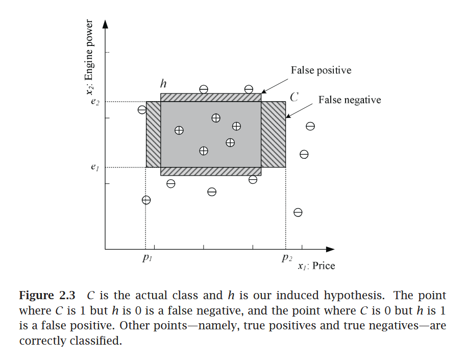
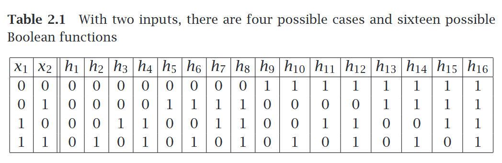
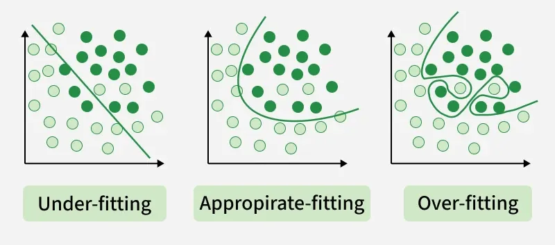

CIT-423 Machine Learing
Professor Md Abdul Masud
Reference Book: Ethem Alpaydın - Introduction to Machine Learning (Third Edition)
Introduction
- Concepts on Machine Learning, Deep Learning, and Reinforcement Learning
-
Concepts on Supervised Learning, Unsupervised Learning, and Semi-Supervised Learning
-
Supervised Learning
- Discrete \(\to\) Classification \(\to\) Accuracy
- Continuous \(\to\) Regression \(\to\) Error
-
Prameter Estimation \(\to\) Linear Regression
Chapter 2 : Supervised Learning
2.1 Learning a Class from Examples (Data)
Classification:
- Hypothesis \(\to\) Equation/Mathematical Model
- Most specific hypothesis \(\to\) tightest hypothesis + all positive
- Most general hypothesis \(\to\) largest hypothesis

Assignment
Multi-Class Classification
- Confusion Matrix
- Accuracy
- Precision
- Recall
- F1-Score
- ROC Curve
2.2 Vapnik-Chervonenkis (VC) Dimention
- largest point
- n points \(\to\) \(2^n\) possible points
- \(\tau = {f(x)}\)
2.3 Probably Approximately Correct (PAC) Learning
Given a class, \(C\), and examples drawn from some unknown but fixed probability distribution, \(p(x)\), we want to find the number of examples, \(N\), such that with probability at least \(1 − δ\), the hypothesis \(h\) has error at most \(\epsilon\), for arbitrary \(δ ≤ 1/2\) and \(\epsilon > 0\)
where \(CΔh\) is the region of difference between \(C\) and \(h\)
2.4 Noise
2.5 Learning Multiple Classes
In the general case, we have \(K\) classes denoted as \(C_i, i = 1, . . . , K\), and an input instance belongs to one and exactly one of them. The training set is now of the form \(X = \{x^t , r^t \}N t =1\) where \(r\) has \(K\) dimensions and
We have \(K\) hypotheses to learn such that,
The total empirical error takes a sum over the predictions for all classes over all instances:
2.6 Regression
- The function is not known but we have a training set of examples drawn from it, where \(r^t ∈ \mathbb{R}\). If there is no noise, the task is interpolation.
-
We would like to find the function \(f(x)\) that passes through these points such that we have \(r^t = f(x^t)\)
-
In polynomial interpolation, given \(N\) points, we find the \((N−1)\)st degree polynomial that we can use to predict the output for any \(x\). This is called extrapolation extrapolation if \(x\) is outside of the range of \(x^t\) in the training set.
-
In regression, there is noise added to the output of the unknown function where \(f(x) ∈ \mathbb{R}\) is the unknown function and is random noise.
- The explanation for noise is that there are extra hidden variables that we cannot observe where \(z^t\) denote those hidden variables.
- The empirical error on the training set \(X\) is
- Our aim is to find \(g(·)\) that minimizes the empirical error.
- There we used a single input linear model where \(w_1\) and \(w_0\) are the parameters to learn from data.
- The \(w_1\) and \(w_0\) values should minimize where \(\bar{x} = \sum_{t} x^t /N\) and \(\bar{r} = \sum_{t} r^t/N\)

Assignment
Errors and Evaluation Metrics for Regression
2.7 Model Selection and Generalization

2.8 Dimensions of a Supervised Machine Learning Algorithm
- Loss function, \(L(·)\), to compute the difference between the desired output, \(r^t\), and our approximation to it, \(g(x^t |θ)\), given the current value of the parameters, \(θ\). The approximation error, or loss, is the sum of losses over the individual instances
- Optimization procedure to find θ∗ that minimizes the total error